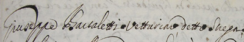

|
- PROCESSI E FATTI CURIOSI CHE RIGUARDANO I FANTINI -
|
|

Giuseppe Bartaletti Vetturino detto Strega, stato altre
volte processato per offese ad un ebreo, è restato
adesso di nuovo inquisito, perchè sotto li 20 Novembre 1714 sdegnatosi che Giuseppe
Morandini (omonimo di Scricciolo, che però nacque nel 1799) avesse richiesto a Francesco Vannucchi una pipa da fumare il tabacco, che
l'aveva riconosciuta per sua, e detto Vannucchi l'aveva avuta dall'Inquisito, al quale
parimente la richiese, cominciò ad altercar seco per tal causa, ed esso Inquisito con un
coltello serratoio ammennò per di dietro un colpo al detto Morandini in atto che dal
Vannucchi si conduceva all'Osteria dell'Angelo*, e con tal colpo li fece una ferita nella
spalla destra della figura, e grandezza d'un pinottolo... L'inquisito si è reso contumace...
condannato alla pena di scudi 200 stante la duplicazione per la notte (era successo
all'un'ora di notte), e nelle spese da liquidarsi, con richiamo di giorni 15 a comparire a giustificarsi.  Oltre al cognome, che in tutti i libri che trattano di Palio si trova scritto con la "o" (Bortoletti), si nota che l'inquisito si era reso contumace: considerato che Strega vinse nel 1712 e quindi nel 1717, si potrebbe azzardare l'ipotesi che per qualche anno egli avesse preferito vivere in esilio, forse nella sua città, che sappiamo fosse Pistoia. (Archivio Arcivescovile di Siena, Incarti matrimoniali 6081, anno 1730) 
Sfogliando le pagine di "Osterie e Locande dei secoli passati" si apprende che l'"Angelo", quando avvenne il fattaccio, doveva essere vicino a S.Cristoforo. Il 9 aprile 1716, "Jacomo del già Pavolo Menichelli Romano detto per sopranome il Ciarafano quale però in più volte haveva abitato per tempo notabile in questa città d’Anni 50 in circa; fù trovato morto in una Stalla posta in faccia al Osteria del Angelo Cura di S.Cristofano..." (AAS, 1111, c.19v, n.104). |